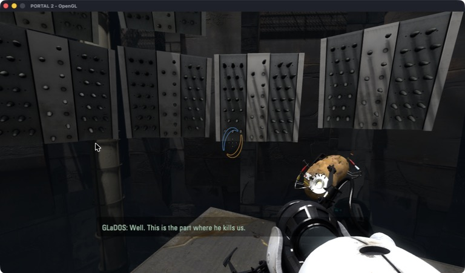
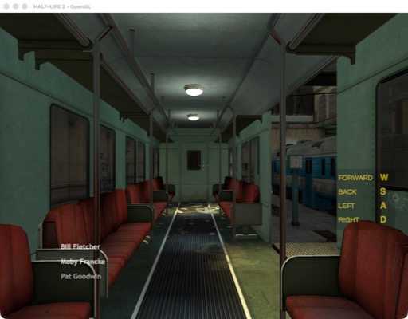
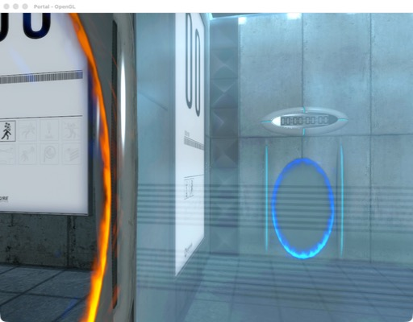
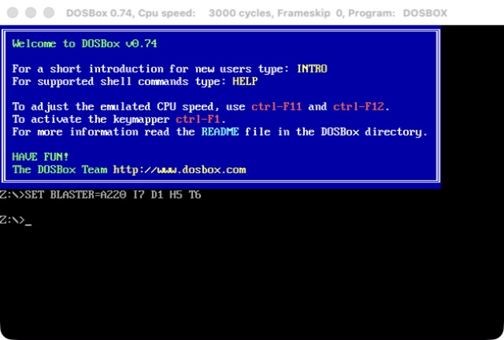
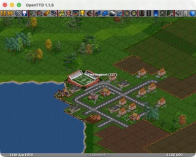

Run 32-bit Intel Mac apps and games on current macOS, Apple Silicon included. The Mac version of Portal 2 plays start to finish.

macOS stopped running 32-bit apps with Catalina in 2019, and Apple Silicon Macs never could. Many Mac games and apps were only ever built for 32-bit Intel and will never get a new version.
mac32 runs them anyway. It loads the app into a 64-bit process, runs its code under Rosetta 2, and passes each call it makes to the 64-bit system libraries. You use the real Mac version of the app, not a Windows build or a virtual machine. Think of it as Wine for old Mac apps.
| Portal 2 | Plays start to finish: graphics, sound, Bink videos, mouse, keyboard, saves and Steam. |
| Half-Life | Menu, New Game and maps work (25th anniversary build). |
| Portal, Half-Life 2 | Menus and maps draw. Valve's 2024 build cannot make fonts, so mac32 patches that in memory. |
| DOSBox 0.74 | Starts, draws the DOS prompt and starts its sound. |
| OpenTTD 1.1.5 | Runs and draws the game. |
| VLC 1.1.12 | Shows its main window; cannot open files yet. |
| Firefox 3.6 | Starts, then stops at the first old Carbon call mac32 lacks. |
worksruns, not fully testedstarts, not usable yet
More apps are on the way. mac32 check tells you whether an app will run and which system calls it still needs.




Rosetta 2 still runs 32-bit x86 code in a 32-bit code segment. mac32 sets one up and switches in and out of it, which takes about 55 ns per call.
32-bit code can only reach the first 4 GB. mac32 keeps that range for the app's code, heap and thread stacks.
Over 3,300 functions from libc, CoreFoundation, CoreGraphics, Carbon, OpenGL, OpenAL and Core Audio, with arguments converted between 32 and 64 bits.
Classes an app defines become real 64-bit classes. Old GNU C++ strings and streams match GCC 4's layout, so code built in 2010 works with them.
A game's own 32-bit Steam library talks to the 64-bit Steam client you already run. Steam still checks that you own the game.
Some old builds have bugs that stop them on any Mac. mac32 fixes them in memory for that exact build and never changes the files.
For the full story of how each part was built, see the development journal.
You need an Apple Silicon Mac with Rosetta 2 (or an Intel Mac) and the Xcode command line tools.
git clone https://github.com/Shagulka/mac32.git
cd mac32
tools/get-llvm.sh
make
make installThen open Mac32.app and pick an app, or use the terminal:
mac32 check ~/Games/OpenTTD.app # will it run?
mac32 run ~/Games/OpenTTD.app
mac32 run "Portal 2" # a Steam game, by folder namemac32 does not include any games or Apple files; you use your own copies. For Steam games, Steam must be running and logged in.
Tried an old app? Tell us how it went. If it stops, the log names the system call it was missing, and that tells us what to add next. To add one yourself, see CONTRIBUTING.md.